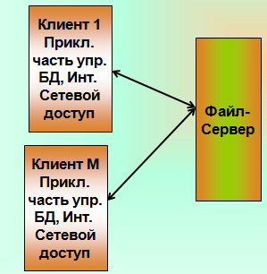

Функции сервера: хранение данных
Функции клиента: обработка данных происходит на стороне клиента

Достоинства:
- Удобство централизованного управления доступом
- Низкая стоимость разработки
- Высокая скорость разработки
Недостатки:
- Высокий уровень трафика в сети
- Толстый клиент
- Вероятность коллизий